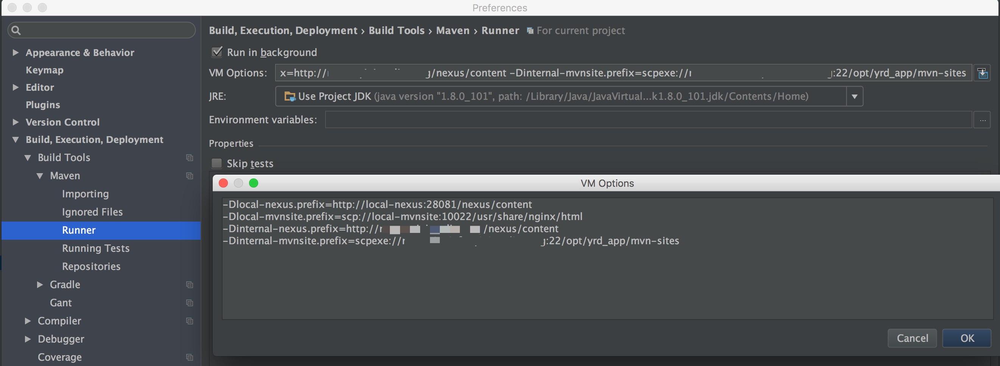
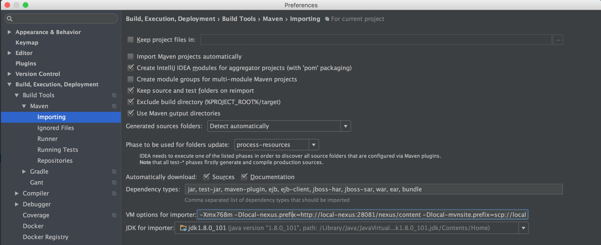

注意oss下不要混入其它项目, 否则构建gitbook或启动本地git服务时可能会出现问题.
启动本地git之前一定要确保本地的oss-build项目有master分支. 因为我们的项目使用gitflow, 默认分支都是develop, master分支只放production ready的代码. 构建时需要到oss-build的git仓库下载配置文件, 通常指向master分支. 所以要保证master分支被push到本地git服务.
如果忘记了启动之前需要master分支, 可以通过以下任意一种方法补救 1.pull下来master分支并重启本地git服务 2.执行(cd oss-build; git push local-git master:master;)
自动设置oss开发环境 via curl sh -c "$(curl -fsSL https://github.com/home1-oss/oss-build/raw/master/src/main/install/install_oss_on_mac.sh)" via wget sh -c "$(wget https://github.com/home1-oss/oss-build/raw/master/src/main/install/install_oss_on_mac.sh -O -)"
它会自动进行下列操作:
检查必备工具的版本, 自动安装或提示你手动安装
自动配置环境变量
TODO 为什么要配置环境变量? 配置环境变量为上策, 修改本地settings.xml为下策
设置maven等构建工具
将oss全套项目和配置repo逐个clone到oss目录下
构建项目, 启动docker容器


执行oss-vmopts命令, 复制输出的内容, 粘贴到下面图示处.   注意, 此截图仅表示配置的位置, 配置内容以文档为准, 务必完整配置.
整体发布
mvn -U ${DEPLOY_REPOSITORY} clean install deploy
分步发布
# 发布root pom的快照
mvn -U -N ${DEPLOY_REPOSITORY} clean install deploy
# 发布oss-dependency的pom的快照
(cd oss-dependency && mvn -U ${DEPLOY_REPOSITORY} clean install deploy)
整体本地安装
mvn clean install
分步本地安装
# 离线本地安装 root pom mvn -N clean install # 本地安装oss-dependency的pom (cd oss-dependency && mvn clean install)
maven site 构建时增加参数
jira.projectKey # jira上的projectKey jira.user # jira用户名 jira.password # jira密码